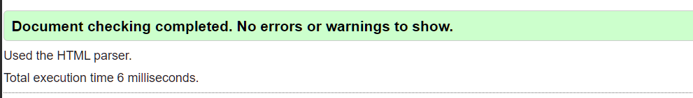

MY DEVELOPMENT JOURNEY
Site Report
This report reflects on my experience of learning web development, designing and developing my portfolio website, solving coding problems and improving my understanding of HTML, CSS and responsive web design.
My Web Development Experience
At the beginning of this module, I had only a basic understanding of web development. I knew that HTML was used to create the structure of a webpage and CSS was used to make it look attractive, but I did not fully understand how different elements worked together to create a complete website.
During the module, I gradually learned how to create
structured HTML documents and connect multiple
webpages using navigation links. I became more
familiar with semantic elements such as
header, nav,
main, section,
article and footer.
CSS was another important part of my learning experience. I practised using selectors, margins, padding, borders, typography, Flexbox, Grid and media queries. Creating different layouts helped me understand how the same content can be presented in different ways while still maintaining a consistent visual identity.
Development Process
I developed my portfolio gradually rather than creating all the pages at once. I started with the home page and created the basic structure and navigation. After that, I developed the projects, skills, blog and contact pages. Finally, I created the site report to document my development experience.
One of the important requirements was maintaining a consistent design across the website. I therefore used the same navigation, typography, spacing and general styling on every page. At the same time, I used a different grid layout on the projects page to demonstrate my understanding of CSS Grid and layout techniques.
I also used GitHub throughout the development process. I made regular commits to record changes instead of uploading the entire website as one final commit. This helped me understand the importance of version control and allowed me to keep track of my progress.
My Ups and Downs
My experience was not always easy. One of the biggest difficulties I faced was understanding why some of my code was not working as I expected. For example, there were times when images did not appear because the file path was incorrect. I also experienced problems with CSS positioning, spacing and responsive layouts.
Another challenge was learning Git and GitHub.
At first, commands such as git add,
git commit and git push
were confusing. I sometimes received errors when
trying to push files or manage my repository.
However, working through these problems helped me
understand how version control works.
One of the most rewarding moments was seeing my separate webpages become one complete website. Successfully connecting the pages, fixing validation errors and improving the design gave me more confidence in my ability to develop websites.
Design Decisions and User Interface
For my portfolio, I wanted to create a simple, clean and modern interface. I avoided making the pages unnecessarily complicated because I wanted visitors to find information easily. The same navigation menu is used throughout the website so users can move between pages without confusion.
I selected a simple sans-serif font because it provides good readability on both desktop and mobile screens. I also used a consistent colour scheme across the website to create a stronger visual identity.
I used spacing, headings, cards and sections to separate different types of information. The project page uses a different grid arrangement because the assignment requires the project page to demonstrate a different layout from the other pages.
My design ideas were influenced by modern portfolio websites that use minimal layouts, clear typography, simple navigation and organised project sections. I also considered responsive design so that the website remains usable on smaller screens.
Technical Skills I Developed
- Creating semantic HTML structures
- Using CSS selectors and properties
- Creating responsive layouts
- Using Flexbox and CSS Grid
- Adding images and alternative text
- Creating navigation between webpages
- Creating HTML forms
- Debugging HTML and CSS problems
- Validating HTML and CSS
- Using Git and GitHub for version control
HTML and CSS Validation
Validation was an important part of my development process. I used the W3C Markup Validation Service to check my HTML pages and the W3C CSS Validation Service to check my stylesheet.
During the development process, validation helped me identify mistakes in my code. I corrected the errors and checked the pages again until the validators confirmed that the code was valid.


Reflective Discussion
Looking back at my experience, I have learned that developing a website involves much more than simply writing code. Planning, design, testing, debugging and user experience are all important parts of the development process.
Initially, I concentrated mostly on making my webpages look good. However, throughout the module I realised that the structure of the HTML is equally important. Using the correct semantic elements makes the website more organised and improves accessibility.
I also learned that debugging is a normal part of programming. When something does not work, checking the code carefully and understanding the error is more useful than simply trying random changes. This has improved my problem-solving skills and made me more confident.
If I developed this website again, I would improve the accessibility, add more advanced JavaScript interactions and learn how to connect forms to a proper backend database. I would also continue improving my responsive design skills.
GitHub Repository
GitHub was used to store and manage my website throughout the development process. I made regular meaningful commits to show the progress of the project and record changes made during development.
My GitHub Repository:
Video Demonstration
I created a short video demonstration of my portfolio website. The video shows each page, explains my main design decisions and gives an overview of the CSS techniques used to create the site.
YouTube Demonstration:
Conclusion
Overall, this module has given me a strong foundation in web development. I have learned how to structure webpages using HTML, style them using CSS, create responsive layouts and test my code using validation tools. I also gained practical experience with GitHub and version control.
Although I faced challenges during the development process, each problem gave me an opportunity to learn something new. I am now more confident about creating webpages independently and I hope to build on these skills by learning JavaScript, backend development and database technologies in the future.